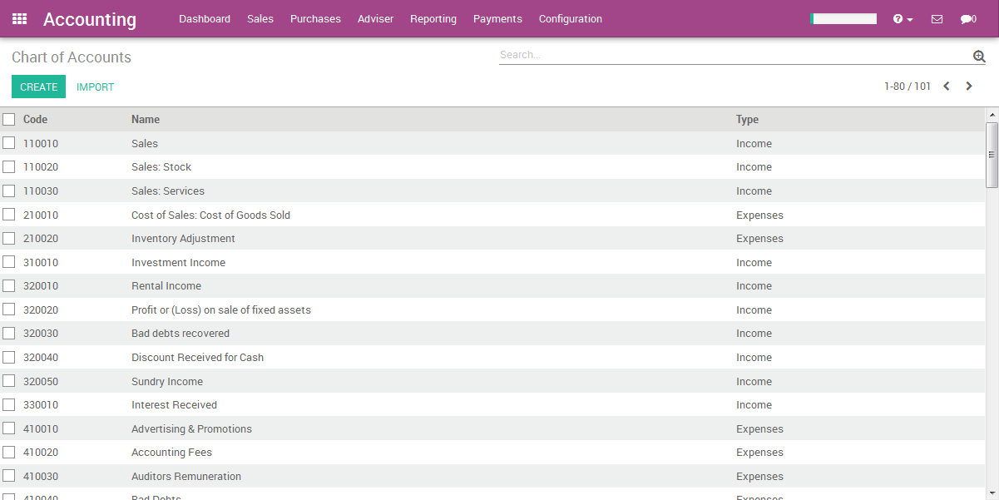

<section class="oe_container">
    <div class="oe_row oe_spaced">
        <div class="oe_span12">
            <h2 class="oe_slogan">South Africa</h2>
            <h3 class="oe_slogan">Chart of Accounts</h3>
        </div>
        <div class="oe_span6">
            <div class="oe_row_img oe_centered">
                
            </div>
        </div>
        <div class="oe_span6">
            <p class="oe_mt32">
                This module installs a default Chart of Accounts for South Africa.
            </p>
        </div>
    </div>
</section>